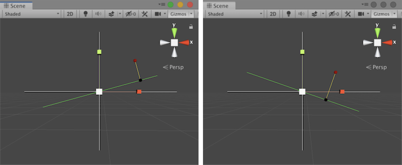

Vector3.ProjectOnPlane
Parameters
| planeNormal | The direction from the vector towards the plane. | |
| vector | The location of the vector above the plane. |
Returns
Vector3 The location of the vector on the plane.
Description 描述
Projects a vector onto a plane defined by a normal orthogonal to the plane.
A Vector3 stores the position of the given vector in 3d space. A second Vector3 is given by planeNormal and defines a direction from a plane towards vector that passes through the origin. Vector3.ProjectOnPlane uses the two Vector3 values to generate the position of vector in the planeNormal direction, and return the location of the Vector3 on the plane.

The vector starts at the red circle and ends at the black circle representing the plane normal.
The script example below makes Update generate a vector position, and a planeNormal normal. The Vector3.ProjectOnPlane static method receives the arguments and returns the Vector3 position.
using System.Collections; using System.Collections.Generic; using UnityEngine;
// Vector3.ProjectOnPlane - example
// Generate a random plane in xy. Show the position of a random // vector and a connection to the plane. The example shows nothing // in the Game view but uses Update(). The script reference example // uses Gizmos to show the positions and axes in the Scene.
public class Example : MonoBehaviour { private Vector3 vector, planeNormal; private Vector3 response; private float radians; private float degrees; private float timer = 12345.0f;
// Generate the values for all the examples. // Change the example every two seconds. void Update() { if (timer > 2.0f) { // Generate a position inside xy space. vector = new Vector3(Random.Range(-1.0f, 1.0f), Random.Range(-1.0f, 1.0f), 0.0f);
// Compute a normal from the plane through the origin. degrees = Random.Range(-45.0f, 45.0f); radians = degrees * Mathf.Deg2Rad; planeNormal = new Vector3(Mathf.Cos(radians), Mathf.Sin(radians), 0.0f);
// Obtain the ProjectOnPlane result. response = Vector3.ProjectOnPlane(vector, planeNormal);
// Reset the timer. timer = 0.0f; } timer += Time.deltaTime; }
// Show a Scene view example. void OnDrawGizmosSelected() { // Left/right and up/down axes. Gizmos.color = Color.white; Gizmos.DrawLine(transform.position - new Vector3(2.25f, 0, 0), transform.position + new Vector3(2.25f, 0, 0)); Gizmos.DrawLine(transform.position - new Vector3(0, 1.75f, 0), transform.position + new Vector3(0, 1.75f, 0));
// Display the plane. Gizmos.color = Color.green; Vector3 angle = new Vector3(-1.75f * Mathf.Sin(radians), 1.75f * Mathf.Cos(radians), 0.0f); Gizmos.DrawLine(transform.position - angle, transform.position + angle);
// Show a connection between vector and response. Gizmos.color = Color.yellow; Gizmos.DrawLine(vector, response);
// Now show the input position. Gizmos.color = Color.red; Gizmos.DrawSphere(vector, 0.05f);
// And finally the resulting position. Gizmos.color = Color.black; Gizmos.DrawSphere(response, 0.05f); } }